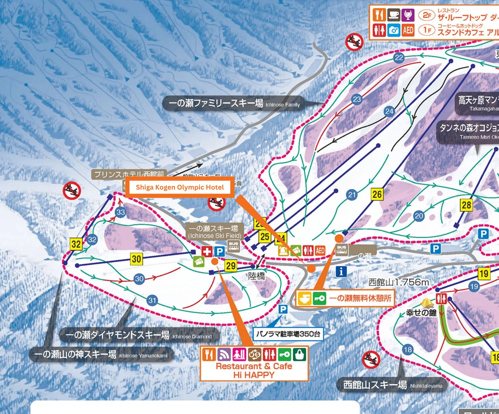
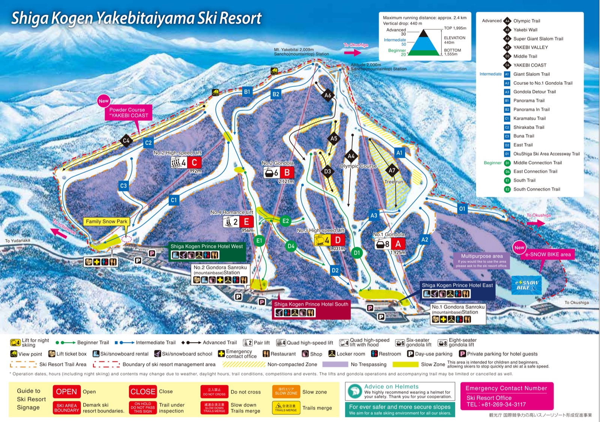

Nineteen connected ski areas on one pass, plus a village down the hill.
The mountain
Where everything sits
One road in, one road out — it only runs from the south
Tap a marker for details Open — the only way up, from Yudanaka Closed mid-Nov–late Apr, toward KusatsuColoured lines are real runs & lifts (blue easier, red/black harder)
01Base one
Ichinose
Good
This is where the Olympic Hotel actually sits, right by the Ichinose Diamond/Family lifts — true ski-in, ski-out
Central hub — most rental shops, restaurants, and the gondola/lift network radiate from here
Where the direct express bus from Nagano terminates (Yamanoeki)
Watch for
Busy at first-lift and last-lift
02One run away
Yakebitaiyama
Good
This is where the Prince Hotels sit — the Olympic is next door in Ichinose, not here
One ski connector (Kamoshika Course) from Ichinose — no shuttle needed to reach it
Watch for
Quiet at night unless you shuttle out
03Furthest north
Okushiga Kogen
Good
Quietest lift lines, often the best untouched snow
Its own gondola, worth a full day
Watch for
Furthest from Ichinose — mind the last shuttle back
04Big terrain
Higashidateyama & Terakoya
Good
Includes Takamagahara Mammoth — the largest connected block of runs
Good mix of levels, easy to burn a whole day here
Watch for
Exposed and windy higher up on a bad-weather day
05Near closed pass
Yokoteyama
Good
Easternmost lift zone, quieter, closest to the Shibutoge viewpoint
Watch for
Sits right by the gate that's shut all winter — it's a dead end, not a through-route to Gunma
Several named areas under one pass — easy to lose track of where you are
07Separate area
Kita-Shiga Kogen
Good
Ryuoo Ski Park and Komaruyama — a genuinely different resort, worth a day for a change of scenery
Watch for
Not connected to the main lift network — needs its own transport leg
08South gateway
Yudanaka & Shibu Onsen
Good
Base Two (Kamei no Yu, Aburaya Tousen) — the train station, onsen town, liveliest nights
Watch for
Not ski-in, ski-out — budget the shuttle or drive up every morning
09Side trip
Jigokudani Yaen-koen (Snow Monkey Park)
Good
Wild snow monkeys in hot springs, a short detour from Yudanaka — this is the Day 4 side trip on the Itinerary tab
Watch for
Gets busy midday, and there's a walk in from the bus stop
Still open
One road in, one road out
Route 292 (the Shiga Kusatsu Kogen Route) is the only way up, via Yudanaka. It's
closed past Shibutoge — the section toward Kusatsu, Gunma — roughly mid-November
to late April, so for the whole trip it's a dead end, not a through-route. Every
option on the Transport tab uses this same southern road; worth reconfirming the
exact closure dates closer to March.
Which zones we actually want to ride
Nineteen areas is a lot for a handful of days — worth agreeing on 2–3 priority
zones per day rather than trying to see everything.
Next
Use this to make sense of the Stay tab, then Transport for how we actually get to it.
Shiga Kogen · Booked
We're staying at the Olympic
Decision made. Shiga Kogen Olympic Hotel, 4/5 – 11 March 2027 — exact check-in day (4th or 5th) still to confirm.
Family rooms, mountain-view rooms, non-smoking rooms, ensuite bathrooms available
Good to know
Check-in 15:00–21:00 (tell the hotel your arrival time in advance) · check-out 07:00–10:00
Curfew — entry closed 22:00–07:00
Cards only, cash not accepted · pets not allowed · no cots or extra beds
"Ski-in, ski-out: perfect for our holiday; staff is amazing, helpful and friendly; facilities are good."
Elesse, Singapore
"Very close to the chair lifts, practically right across the street, ski lockers and rental on site for maximum convenience, relaxing onsen to enjoy every evening, great buffet breakfast and dinner."
Zhi, Singapore
Olympic Hotel sits in Ichinose itself — Diamond and Family are the actual home lifts
Correction from an earlier draft of this page: the home mountain is Ichinose,
not Yakebitaiyama. Olympic Hotel's own address places it in Ichinose, right by the Ichinose
Diamond and Ichinose Family lifts — Yakebitaiyama (where the Prince Hotels actually sit) is a
genuine neighbour, one run away, not the doorstep. Ichinose Diamond + Family together run 9
named courses across 8 lifts — mostly green, a few red, one proper black — connected to each
other by the short Monkey Course.

Official Shiga Kogen Central Area map, cropped to Ichinose, with Olympic Hotel's exact spot marked. Blue circles are course numbers (matched to names below); yellow squares are lift numbers — different numbering, so a course and a lift can share a digit. The hotel sits right by Ichinose Diamond, served by lift No.29 — this is the genuinely nearest lift-served terrain, a few hundred metres away. Prince Hotel West, visible top-left, is the Yakebitaiyama side, not the Olympic.
Green — beginner Red — intermediate Black — advanced
Ichinose's own map uses a 3-level scale — red means intermediate here, not advanced like it did
on the Yakebitaiyama map further down.
24Perfecter Course1,500m · avg 26°
21Ichinose Family Front1,000m · avg 15°
22Tengu Course3,200m · avg 10°
23Panorama Course2,300m · avg 16°
20Tanneno Mori Okojo500m · avg 10°
30Diamond Slope500m · avg 12°
31Rabbit Course600m · avg 9°
32Monkey Course750m · avg 8°
33Kamoshika Course800m · avg 8°
Numbers 25–28 belong to lifts on this map, not courses — course and lift numbering run as
two separate sequences, so a digit can mean either depending on whether it's in a blue circle
or a yellow square.
Black — advanced (1 run)
24 · Perfecter Course
1,500m · avg 26°
Ichinose's only black — long and consistently steep, used for competitive ski training.
The obvious step up once the group's comfortable on Panorama or Eternal.
Red — intermediate (3 runs)
23 · Panorama Course
2,300m · avg 16°
The longest course in Ichinose by a wide margin — a real point-to-point descent with
views back over the valley, not just a lap run.
30 · Diamond Slope
500m · avg 12°
Ichinose Diamond's main run and the closest named piste to Olympic Hotel — wide and
straightforward, good for a quick lap before breakfast closes.
33 · Kamoshika Course
800m · avg 8°
The connector across to Yakebitaiyama — gentle enough that it reads more like a green
despite the intermediate rating. This is how the group gets over to the Prince Hotel side
and the Olympic Course/Yakebi Wall below.
Green — beginner (5 runs)
22 · Tengu Course
3,200m · avg 10°
The longest run in Ichinose, full stop — a gentle, unhurried 3.2km cruise that's genuinely
rare to find at beginner pitch. The one to save for a tired-legs afternoon lap.
21 · Ichinose Family Front Slope
1,000m · avg 15°
The main face of Ichinose Family, right off the base — the run most of the group will
default to on the first few laps.
20 · Tanneno Mori Okojo Slope
500m · avg 10°
Sits just past the Family boundary toward Takamagahara — an easy, low-traffic slope if the
main Family face is busy.
31 · Rabbit Course
600m · avg 9°
Ichinose Diamond's beginner loop, running alongside the main Diamond Slope — first-timers
can stay here while the rest of the group takes the red.
32 · Monkey Course
750m · avg 8°
The easy link between Ichinose Family and Ichinose Diamond — this is how the two halves of
the home mountain actually connect, no shuttle needed.
On the mountain
Lifts serving Ichinose
Ichinose Quad Lift
4-person quad · Lift No.23
The main lift out of the Ichinose Family base — this is the one that reaches Tengu,
Panorama, and the upper Family terrain.
Ichinose 2nd Pair Lift A
2-person pair · Lift No.24
Short pair lift right at the Ichinose Ski Field hub, next to the rental/AED station shown
on the map.
Ichinose 2nd Pair Lift B
2-person pair · Lift No.25
Runs parallel to 2nd Pair A from the same base — the two together handle most of the
beginner-to-intermediate traffic right at the hub.
Ichinose 3rd Quad Lift
4-person quad · Lift No.26
Reaches further up the Family flank toward Eternal and Perfecter — the way up if the
group's ready for the black.
Ichinose 8th Quad Lift
4-person quad · Lift No.28
Serves the far side of the Family area toward LIPS and the Takamagahara boundary —
quieter than the main quad.
Ichinose Diamond Pair Lift
2-person pair · Lift No.29
The closest lift to Olympic Hotel on this whole page — serves the Diamond Slope and
Rabbit Course loop.
Ichinose Diamond Quad Lift
4-person quad · Lift No.30
Runs alongside the Diamond Pair Lift from the same base — faster option for lapping the
Diamond/Rabbit loop.
Ichinose Yamanokami 2nd Lift
Lift No.32 · type not specified on the resort's own map
Tucked in the Yamanokami corner by the Monkey and Kamoshika connectors — the way over
toward Ichinose Family and, eventually, Yakebitaiyama.
Getting around from here
Monkey Course
~750m, links Ichinose Family and Ichinose Diamond directly — the two halves of the home
mountain, no shuttle needed.
Kamoshika Course
~800m, the way over to Yakebitaiyama and the Prince Hotel side — see below for what's
over there.
One run away · Yakebitaiyama
Bonus Mountain Next Door
Ski the Kamoshika Course from Ichinose and you're there — no shuttle, no walking
This is where the Prince Hotels sit, and it hosted the Giant Slalom at the
1998 Nagano Winter Olympics — that course is still skiable today. It's worth a
full day: 20 runs, 2 gondolas, 3 chair/pair lifts, a proper black wall, and a rare tree run for
Shiga Kogen. The map below carries its own full English legend for all 20 runs (A1–O1) and all
5 lifts, so it's reproduced here as-is rather than repeated in text.

Official Prince Hotels trail map for Yakebitaiyama — the full run and lift legend is printed directly on the sheet, top right. Reach it from Ichinose via the Kamoshika Course (bottom-left arrow, "To Ichinose").
Worth knowing before you go
A4 · Olympic Course
570m · 250m vert · avg 21° · Black
The actual 1998 Nagano Winter Olympics Giant Slalom course. Short, consistently steep,
no flats — the one to say you skied when you're home.
A5 · Yakebi Wall
230m · 200m vert · avg 39° · Black
The steepest pitch on the mountain, often mogulled by midday. Scope it from the lift
before committing.
A7 · Yakebi Valley
623m · 200m vert · Black
A genuine tree run through the valley — rare for Shiga Kogen, where most terrain is
groomed and open. Listed as Advanced on the resort's own map, alongside Olympic and Yakebi
Wall, not intermediate.
A1 · Giant Slalom Course
2,230m · 440m vert · Blue
The mountain's longest run, top to base off Gondola 1 — wide and forgiving, good for
keeping the whole group together.
Two gondolas (No.1, 8-seat, 1,925m; No.2 "Panorama", 6-seat, 2,121m), two 4-person high-speed
quads, and one 2-person Romance Lift round out the other 16 runs — full names, lengths, and
difficulty are all on the map above.
Shiga Kogen · March
How do we get up?
Nagano Station to Shiga Kogen, three ways: express bus, train + local bus, or two rental cars. Timetables run 6 Dec 2025 – 6 Apr 2026.
Route one
Direct express bus
Nagano Station East Exit → Shiga Kogen · one seat, no transfer
1AGoes all the way up
Weekday departures
1h20–30ride to Yamanoeki
¥3,000one-way, per person
Good
Six solid weekday runs reach the resort: 9:10, 10:40, 11:15, 13:10, 14:30, 17:05
Continues past Yamanoeki to the Prince Hotels, Okushiga Gondola and Okushiga Kogen Hotel, ~10–15 min further
Cash, touch-card (Visa/Mastercard/UnionPay contactless) and PayPay/Alipay all accepted on board
Bad
Only one or two buses an hour, so the whole group needs to commit to the same departure
Confirm underfloor luggage space for 12 bags before booking — worth calling ahead or splitting across two departures
1BWatch for these
Snow Monkey Park only
8:50 / 10:00*10:20 / 11:40 / 12:20 / 14:10*
¥3,000to Snow Monkey Park only
Good
Useful if anyone wants a Snow Monkey Park detour before heading up
Bad
These runs terminate at Snow Monkey Park, well short of the ski area — don't board by mistake
The starred 10:00 and 14:10 runs are cash-free: buy tickets in advance at the Nagano Station ARUYO desk or a machine
A few extra runs
8:15 & 21:00
An earlier 8:15 run to the resort adds on Saturdays (20 Dec–21 Mar) plus 11 Feb and 20 Mar. A 21:00 run needs a reservation and only runs Fridays (Jan 9–Mar 13) and Mar 19.
Coming back down
Return buses run from Okushiga Kogen Hotel roughly hourly from 7:45 to 17:40, last Nagano arrival around 20:05. Same ¥3,000 fare.
Route two
Train + local bus
Nagaden Railway to Yudanaka, then the Shiga Kogen local bus network
2AOne transfer, far more frequent
Nagano → Yudanaka → Shiga Kogen
~45–50minNagaden train to Yudanaka Sta.
~35–40minlocal bus, Yudanaka → Yamanoeki
Good
The Nagaden Railway leaves Nagano roughly every hour through the day, so it's forgiving if the group splits
The connecting local bus at Yudanaka Station (S01) is far denser than the express — near-continuous departures rather than a handful a day
Bad
An extra transfer at Yudanaka Station with 12 bags in tow
Train fare isn't printed on the bus timetable — confirm current Nagaden fare and any luggage limits at the station counter
Slower door-to-door than the direct express once the transfer is factored in
Route three
Two rental cars
12 of us, 12 pieces of luggage · Toyota Rent a Car, picked up at Nagano Station
3A6 pax + 6 bags
Toyota Alphard Hybrid E-Four
Setup
Third row folded flat for luggage, rows one and two carry six people
E-Four = the 4WD hybrid grade — must be requested explicitly, the standard Hybrid trim is front-wheel drive only
Confirm cruise control is fitted on the specific unit at booking
3B6 pax + 6 bags
Toyota Vellfire Hybrid E-Four
Setup
Same 6+6 arrangement, third row down, mirrors the Alphard
Same E-Four (4WD) confirmation needed at booking — don't assume it from the online listing alone
Confirm cruise control on this unit too
Booking notes
Book direct
Go through Toyota Rent a Car (or ORIX) directly rather than a generic booking platform, so the counter can actually guarantee both units are the E-Four trim on your dates.
Before you drive
Every driver needs an International Driving Permit, arranged in your home country before the trip. Pickup near Nagano Station puts you about an hour's mountain drive from Shiga Kogen.
Still open
Bus vs. car for the luggage-heavy leg
The express bus is simplest if 12 bags fit in the hold; the two-car option removes that risk entirely but adds two drivers with IDPs and a mountain-road drive.
Door-to-door from the airport
If arriving via Narita, a direct coach transfer straight through to Shiga Kogen exists (around ¥16,225 incl. tax per person, ~7 hours via Nagano) — worth weighing against flying into Nagano and doing this leg separately.
Next
Pick a route, and if it's the cars, say who's driving so we can start the IDP paperwork.
Shiga Kogen · March
What's the plan?
A rough shape for the trip — travel days, riding days, one detour. Edit once flights and the hotel are locked.
Draft
Day by day
Placeholder dates — swap in real ones once flights are booked
01
Arrive, transfer up
Land in Japan, make our way to Nagano, then up to Shiga Kogen by whichever route we pick on the Transport tab. Check in, gear sort, early night.
Travel
02
Full day, riding
First full day on the mountain. Lift pass and rental gear sorted the evening before if we can.
Ride
03
Full day, riding
Second day on the slopes. Good day to explore a different lift zone from day one.
Ride
04
Snow Monkey Park detour
Half-day down to Jigokudani Monkey Park via the Snow Monkey Park bus stop, half-day back on the mountain or resting for whoever skips it.
Side trip
05
Full day, riding
Last full day on the mountain — save anything on the group's wish list for this one.
Ride
06
Check out, head home
Morning checkout, transfer back down to Nagano, onward travel from there.
Travel
Still open
Real dates
This is a six-day skeleton, not tied to actual flights yet — reshuffle once we know when everyone can fly in and out.
Lift passes
Multi-day pass vs. day-by-day depends on the final ride-day count above.
Who's driving which leg
If we go with the two rental cars, the arrival and departure days on this page are also the two drives — same people ideally, so it's one trip through the IDP paperwork.
Next
Confirm flight windows, then we can put real dates against each day.
Shiga Kogen · March
Where do we eat?
Nobody's scouted this yet. Categories below, ready for real picks as anyone finds them —
see the note at the bottom for how to add them.
On the mountain
Lodges & kiosks
Ichinose, Yakebitaiyama, Okushiga — lunch without leaving the slopes
Add a pick
e.g. a lodge cafeteria near Ichinose, or a kiosk worth stopping at between runs.
Add a pick
e.g. anywhere with a view worth the extra five minutes.
Off the mountain
Yudanaka & Shibu Onsen
Dinner and drinks once the lifts close
Add a pick
e.g. an izakaya near the station, or somewhere for good soba.
Add a pick
e.g. where to go after the onsen.
Still open
Nothing confirmed yet
This whole tab is a placeholder — first real recommendations win the slots above.
Dietary needs
Worth flagging here early — vegetarian, allergies, etc. — so we're not figuring it out at the table.
Next
If you've been to Shiga Kogen before, or find a good spot researching, add it here.